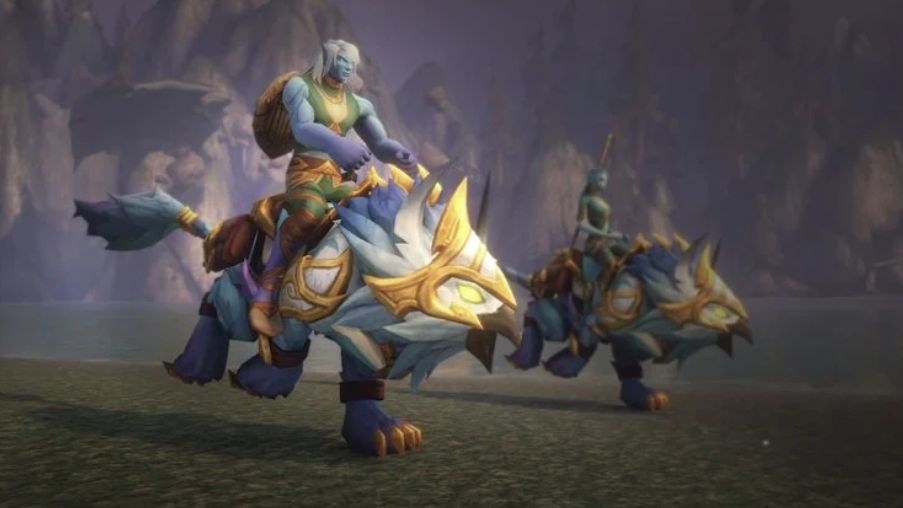

News › Podcast : le lore de Forever
Le podcast des développeurs : lore, Rives Claires, Éolides et Norfendre
12 novembre 2026
Dans le 7e épisode du podcast officiel de WoW Forever, les développeurs se livrent sur l'histoire du jeu : une continuité à part, des zones inédites et beaucoup de portes laissées ouvertes.

Une histoire à part
- Forever a sa propre continuité, un peu comme Hearthstone : l'équipe voulait d'abord suivre l'histoire officielle, mais cela aurait posé problème plus tard.
- Le jeu se situe 5 ans après la Troisième Guerre : c'est le WoW d'origine avec plus de contenu, sans ignorer ce qui vient après.
- Pas de grand méchant unique : des ennemis liés à chaque zone, anciens ou nouveaux. Pas de cinématiques prévues pour l'instant.
- L'équipe a un plan sur plusieurs années et veut développer des personnages et histoires restés dans l'ombre.
Les nouveautés
- Rives Claires : un lieu choisi pour ses racines historiques, avec une histoire différente pour chaque faction.
- Les Éolides : l'équipe ne voulait pas refaire de Quel'Thalas une zone de départ, d'où l'île de Zephras. Aucune autre race jouable par les deux factions n'est prévue pour l'instant (voir notre page Races).
- Nouvelles combinaisons race-classe : comme les prêtres taurens, elles arriveront avec une histoire. Les paladins morts-vivants ont été pensés avec l'équipe de Forsaken Kingdom.
- Scénarios alternatifs : des histoires évoquées mais jamais racontées pourraient être explorées, peut-être via les Grottes du temps.
Et plus tard ?
- Arthas est au Norfendre, mais l'équipe ne se presse pas. Naxxramas et l'invasion du Fléau arriveront un jour.
- Des visites en Outreterre ou au Norfendre ne sont pas exclues.
- L'équipe aimerait permettre de garder les livres trouvés en jeu, et travaille sur des objets liés au lore, comme la torche de la Garde de nuit.
Source : JudgeHype (12 novembre 2026), résumé du podcast officiel WoW Forever (épisode 7, avec Josh Greenfield et Sean Copeland).